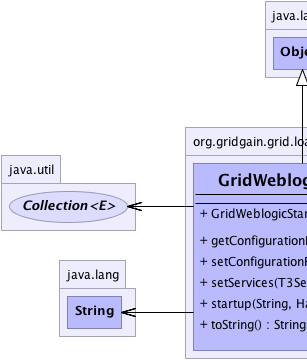
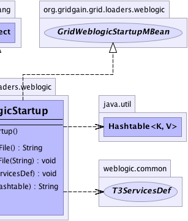

org.gridgain.grid.loaders.weblogic.GridWeblogicStartup
org.gridgain.grid.loaders.weblogic.GridWeblogicStartup
|
GridGain™ 3.6.0c
Community Edition |
|||||||||
| PREV CLASS NEXT CLASS | FRAMES NO FRAMES | |||||||||
| SUMMARY: NESTED | FIELD | CONSTR | METHOD | DETAIL: FIELD | CONSTR | METHOD | |||||||||
java.lang.Object
@GridLoader(description="Weblogic loader") public class GridWeblogicStartup
GridGain loader for WebLogic implemented as a pair of start and shutdown classes. This is a startup class. Please consult WebLogic documentation on how to configure startup classes in Weblogic. Weblogic loader should be used for tight integration with Weblogic AS. Specifically, Weblogic loader integrates GridGain with Weblogic logging, MBean server, and work manager (JSR-237).
The following steps should be taken to configure startup and shutdown classes:
Environment -> Startup & Shutdown Classes -> New).
GridWeblogicStartuporg.gridgain.grid.loaders.weblogic.GridWeblogicStartupcfgFilePath=config/default-spring.xmlGridWeblogicShutdownorg.gridgain.grid.loaders.weblogic.GridWeblogicShutdownCLASSPATH="${CLASSPATH}:${GRIDGAIN_HOME}/gridgain.jar:${GRIDGAIN_HOME}/libs/"
For more information see Configuring and Starting GridGain and Startup and Shutdown Classes.
Note: Weblogic is not shipped with GridGain. If you don't have Weblogic, you need to download it separately. See http://www.bea.com for more information.
Gridify annotation in applications on Bea WebLogic.
GridWeblogicStartup with configuration described above.
-javaagent:${GRIDGAIN_HOME}/libs/aspectjweaver-1.6.8.jar
(replace ${GRIDGAIN_HOME} with absolute path) into startWeblogic.{sh|bat} script
which is located in "your_domain/bin" directory.
GridifySpringEnhancer.enhance(Object) for the object that has method
with Gridify annotation.
| Wiki | |
| Forum |
|  |  |
| Constructor Summary | |
|---|---|
GridWeblogicStartup()
|
|
| Method Summary | |
|---|---|
String |
getConfigurationFile()
Gets configuration file path set in XML configuration for this service. |
void |
setConfigurationFile(String cfgFile)
Sets configuration file path. |
void |
setServices(weblogic.common.T3ServicesDef t3ServicesDef)
See http://e-docs.bea.com/wls/docs100/javadocs/weblogic/common/T3StartupDef.html for more information. |
String |
startup(String str,
Hashtable params)
See http://e-docs.bea.com/wls/docs100/javadocs/weblogic/common/T3StartupDef.html for more information. |
String |
toString()
|
| Methods inherited from class java.lang.Object |
|---|
clone, equals, finalize, getClass, hashCode, notify, notifyAll, wait, wait, wait |
| Constructor Detail |
|---|
public GridWeblogicStartup()
| Method Detail |
|---|
public String startup(String str,
Hashtable params)
throws Exception
startup in interface weblogic.common.T3StartupDefException - Thrown if error occurred.str - Virtual name by which the class is registered as a startupClass in
the config.xml fileparams - A hashtable that is made up of the name-value pairs supplied from the
startupArgs property
public void setServices(weblogic.common.T3ServicesDef t3ServicesDef)
setServices in interface weblogic.common.T3StartupDeft3ServicesDef - Weblogic services accessor.public String getConfigurationFile()
getConfigurationFile in interface GridWeblogicStartupMBeanpublic void setConfigurationFile(String cfgFile)
setConfigurationFile in interface GridWeblogicStartupMBeancfgFile - Configuration file path.public String toString()
toString in class Object
|
GridGain™ 3.6.0c
Community Edition |
|||||||||
| PREV CLASS NEXT CLASS | FRAMES NO FRAMES | |||||||||
| SUMMARY: NESTED | FIELD | CONSTR | METHOD | DETAIL: FIELD | CONSTR | METHOD | |||||||||
|
GridGain - Real Time Big Data
|
|

|
|